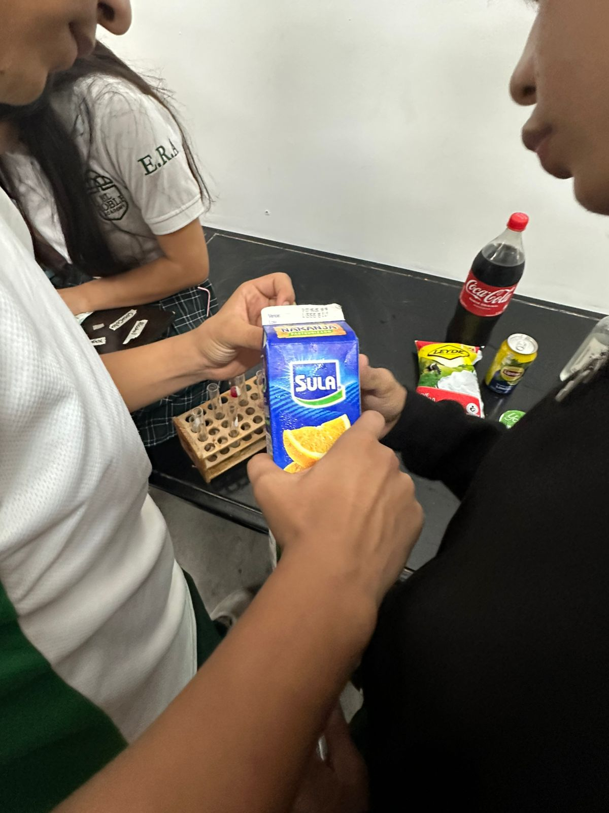

El Roble Academy
Chemistry Lab
By Alex Hernandez
Materials
1.Red cabbage juice
2.Clear plastic cups or test tubes
3.Lemon
4.Orange juice
5.Milk
6.Chlorine
7.Soap
8.Lipton
9.Yogurt
10.Bicarbonate
11.Coke (soda)
12.Alcohol
13.Pineapple juice

Procedure
Firts we start with the cabagge juice, when we mix an element with the purple cabagge juice wiil are going to find the pH of every product, the procedure is simple, the only thing we have to do is to introduce a little bit of purple cabagge juice in a transparent cup and mix with other element.